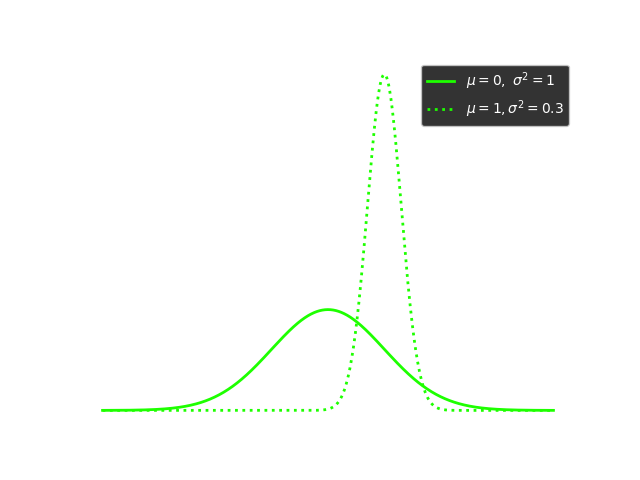

<!DOCTYPE html>
<html lang="en">

<head>
  <meta charset="UTF-8">
  <meta http-equiv="X-UA-Compatible" content="IE=edge">
  <meta name="viewport" content="width=device-width, initial-scale=1.0">
  <title>MTHE 224: Applied Math for Civil Engineers</title>

  <!--
    - favicon
  -->
  <link rel="shortcut icon" href="../../assets/images/pi_icon.ico" type="image/x-icon">

  <!--
    - custom css link
  -->
  <link rel="stylesheet" href="../../assets/css/style.css">

  <!--
    - google font link
  -->
  <link rel="preconnect" href="https://fonts.googleapis.com">
  <link rel="preconnect" href="https://fonts.gstatic.com" crossorigin>
  <link href="https://fonts.googleapis.com/css2?family=Poppins:wght@300;400;500;600&display=swap" rel="stylesheet">
</head>


<body>
    <main>

        <!--  #SIDEBAR   -->
        <aside class="sidebar" data-sidebar>
    
          <div class="sidebar-info">
            <div class="info-content">
              <h1 class="name" title="MTHE 224" >MTHE 224</h1>
    
              <p class="title">Applied Mathematics for Civil Engineers</p>
            </div>
    
            <button class="info_more-btn" data-sidebar-btn>
              <ion-icon name="chevron-down"></ion-icon>
            </button>
    
          </div>
    
          <div class="sidebar-info_more">
    
            <div class="separator"></div>
    
            <ul class="contacts-list">
    
              <li class="contact-item">
    
                <div class="icon-box">
                  <ion-icon name="mail-outline"></ion-icon>
                </div>
    
                <div class="contact-info">
                  <p class="contact-title">Email</p>
    
                  <a href="mailto:Tyler.meadows@queensu.ca" class="contact-link">tyler.meadows@queensu.ca </a>
                </div>
    
              </li>
    
              <li class="contact-item">
    
                <div class="icon-box">
                  <ion-icon name="location-outline"></ion-icon>
                </div>
    
                <div class="contact-info">
                  <p class="contact-title">Location</p>
    
                  <address>127 Jeffery Hall, Queen's University</address>
                </div>
               </li>
               <li class = "contact-item"> 
                <div class="icon-box">
                  <ion-icon name = "calendar-outline"></ion-icon>
                </div>
                <div class = "contact-info">
                  <p class = "contact-title">Lecture Times</p>
                  <time>Mon: 11:30-12:30</time>
                  <time>Tue: 13:30-14:30</time>
                  <time>Thu: 12:30-13:30 </time>
                </div>
              </li>
    
            </ul>

    
        </aside>


        <!-- Main Stuff -->
        <div class="main-content">
               <!-- #NAVBAR  -->
               <nav class="navbar">
    
                <ul class="navbar-list">
                    <li class ="navbar-item">
                        <a href="../lectures/lecture13.html" class = "navbar-link">Previous</a>
                    </li>
        
                  <li class="navbar-item active">
                    <a href="../MTHE224.html?page=lectures" class = "navbar-link">Lectures</a>
                  </li>
        
                  <li class="navbar-item">
                    <a href="#" class="navbar-link">Next</a>
                  </li>
        
                </ul>
        
              </nav>
              <!-- Lecture Content--> 
              
            <article class="lecture active" data-page="lecture">
                <header>
                  <h2 class="h2 article-title">The Normal Distribution</h2>
                </header>
                <div class = "lecture">
                <p>The normal distribution is the most commonly used continuous probability distribution. It is used to described
                    random variables where the outcomes are clustered around a value $\mu$, and outcomes that are far away from $\mu$ are
                    exponentially less probable. Due to the shape of the normal distribution pdf, it is often called a "bell curve". Normal random variables
                    are also called "Gaussian random variables."
                </p>
                 <p><b>Definition:</b> A continuous random variable is normally distributed if it has the pdf
                    $$f(x) = \frac{1}{\sqrt{2\pi \sigma^2}}e^{-\frac{(x-\mu)^2}{2\sigma^2}}$$ for all $x\in\mathbb{R}$
                    
                    The factor of $\frac{1}{\sqrt{2\pi \sigma^2}}$ is the normalization constant, which guarantees that
                    $$\int_{-\infty}^{\infty} \frac{1}{\sqrt{2\pi \sigma^2}}e^{-\frac{(x-\mu)^2}{2\sigma^2}}dx = 1.$$
                  The expected value of the normal distribution can be calculated as normal:
                  \begin{align}
                    \mathbb{E}(X) = \int_{-\infty}^{\infty} \frac{x}{\sqrt{2\pi \sigma^2}}e^{-\frac{(x-\mu)^2}{2\sigma^2}}dx
                  \end{align}
                  We can make the substitution $z = \frac{(x-\mu)}{\sigma}$ and $dz = \frac{1}{\sigma}dx$ to simplify the calculation, giving 
                  \begin{align}
                  \mathbb{E}(X) &= \int_{-\infty}^{\infty}\frac{\sigma z + \mu}{\sqrt{2\pi}}e^{-\frac{z^2}{2}}dz\\
                                &= \int_{-\infty}^{\infty} \frac{\sigma z}{\sqrt{2\pi}}e^{-\frac{z^2}{2}}dz + \mu\int_{-\infty}^\infty \frac{1}{\sqrt{2\pi}}e^{-\frac{z^2}{2}}dz .
                  \end{align}
                  The first term is the integral of an odd function (meaning f(-x) = -f(x)) over a symmetric domain, and is therefore equal to zero. The second term is the integral
                  of the normal distribution pdf when $\mu = 0$ and $\sigma=1$, which is equal to 1, so we find
                  $$\mathbb{E}(X) = \mu.$$
                  A much more involved calculation shows that the variance is  $\mathbb{V}(X) = \sigma^2$.  
                </p>
                <p> In finding the expected value, we made the substitution $z = \frac{(x-\mu)}{\sigma}$, which essentially converted the pdf to a simpler PDF with $\mu = 0$ and $\sigma = 1$. A normal distribution with these specific values for the mean and variance is called a <u>standard normal distribution.</u>
                  Often, when we are doing probability calculations we will want to make this exact conversion. 
                  If $X$ is a normally distributed random variable with mean $\mu$ and standard deviation $\sigma$, then $Z = (X-\mu)/\sigma$ is standard normally distributed. The pdf for a standard normal distribution is 
                  $$f(x) = \frac{1}{\sqrt{2\pi}}e^{-x^2/2}$$
                </p>
                <p><b>Example:</b> The annual rainfall in Kingston is normally distributed with $\mu = 815mm$ and $\sigma = 155mm$. What is the probability that Kingston experiences less than $500mm$ of rain in a given year?</p>
                <p><b>Solution:</b> Let $X$ be the amount of rainfall, then 
                  $$P(X< 500) = \int_{-\infty}^{500} \frac{1}{155\sqrt{2\pi} }e^{-\frac{(x-815)^2}{2\cdot 155^2}}dx.$$
                  Unfortunately, this integral is not solveable. There is no antiderivative of this in terms of elementary functions. What we can do, however, is approximate this numerically. Most scientific calculators and programming languages like python, have built in methods
                  to calculate the CDF for the normal distribution. Referring to python's <code>scipy.stats.norm.cdf</code> function gives
                  $$P(X< 500) \approx 0.02106.$$
                </p>
                <p> To calculate this using the Casio 991-X calculator, find the normal cdf by pressing 
                   <code>mode</code>, then <code>down</code>, then <code>3</code> to select DIST, then <code>2</code> to select Normal CD. Different versions of the calculator may have different procedures, so refer to the manual that came with the calculator.</p>
                <p><b>Exercises:</b> 
                <ol class="lecture-list">
                  <li> Let $X$ be a stanard normally distributed random variable. Find the following probabilities:
                    <ol class="roman">
                      <li>$$P(X>0)$$</li>
                      <li>$$P(-1< X < 1)$$</li>
                      <li>$$P(-2< X < 2)$$</li>
                    </ol>
                  </li>
                  <li>Let $X$ be a standard normal random variable. Using either the inverse normal function on your calculator or the <code>scipy.stats.norm.ppf</code> function in python to calculate the following values
                  <ol class="roman">
                    <li>$a$ so that $P(X < a) = 0.625$</li>
                    <li>$b$ so that $P(b < X) = 0.125$</li>
                  </ol>
                  </li>
                  
                </ol>

                </p>
                </div> 
                 
              </article>

        </div>
    </main>

    <!-- custom js link-->
    <script src="../../assets/js/script.js"></script>

    <!-- ionicon link -->
    <script type="module" src="https://unpkg.com/ionicons@7.1.0/dist/ionicons/ionicons.esm.js"></script>
    <script nomodule src="https://unpkg.com/ionicons@7.1.0/dist/ionicons/ionicons.js"></script>

    <!-- MathJaX-->
    <script>
        MathJax = {
          tex: {
           inlineMath: [['$', '$'], ['\\(', '\\)']]
          },
          svg: {
            fontCache: 'global'
          }
        };
        </script>
        <script type="text/javascript" id="MathJax-script" async
          src="https://cdn.jsdelivr.net/npm/mathjax@3/es5/tex-svg.js">
        </script>
</body>
</html>